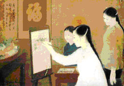

Nghệ thuật Dân gian là một thành tố quan trọng của mỗi nền văn hoá dân tộc. ở Việt Nam, nghệ thuật ấy bao gồm nghệ thuật của dân tộc Kinh (Việt) tại các vùng châu thổ, và nghệ thuật của các dân tộc thiểu số miền núi. Tất cả hợp thành nền văn hoá đa sắc tộc có cội nguồn lịch sử sâu xa.
Chỉ riêng mảng tranh khắc gỗ dân gian cũng đã là kho báu cho các nhà sưu tập và nhà nghiên cứu. Nghệ thuật in tranh qua các bản gỗ khắc nổi xuất hiện từ xa xưa, cha truyền con nối trải qua nhiều thế hệ.
Theo truyền thống, hàng năm cứ vào dịp Tết Nguyên Đán, những tờ tranh màu sắc tươi rói lại bày la liệt khắp nơi từ nông thôn đến thành thị, lên cả vùng núi xa xôi, làm cho không khí hội xuân càng thêm hồ hởi. Đó là tranh Tết. Ngoài ra, có loại Tranh Thờ bán quanh năm.
Tranh khắc gỗ dân gian được sản xuất ở nhiều địa phương, hoặc tập trung từng làng, hoặc do từng hộ gia đình in riêng. Trong các trung tâm nổi tiếng, có Đông Hồ (Hà Bắc), Hàng Trống (Hà Nội), Kim Hoàng (Hà Tây), Nam Hoành (Nghệ Tĩnh), Sình (Huế) ... Dù sản xuất tại đâu, tranh đều phản ánh đời sống xã hội, tuy mỗi vùng vẫn mang đậm sắc thái và kỹ thuật riêng. Hai dòng tranh khắc dân gian có truyền thống lâu đời hơn cả là dòng tranh Đông Hồ và dòng tranh Hàng trống.
Tranh khắc dân gian Việt Nam hết sức hồn nhiên, trực cảm. Nội dung, hình thức đều độc đáo: ý tứ và bố cục, nét vẽ và bảng màu, lại thêm cảm quan hài hước sắc sảo trong xử lý đề tài.
Cùng với tranh khắc, nghệ thuật dân gian Việt Nam còn có những bức tranh vẽ tay của các tác giả khuyết danh thuộc các dân tộc thiểu số ở vùng núi miền bắc: Tày, Nùng, Dao, Cao Lan v.v. Mặc dầu hầu hết là tranh tôn giáo gắn với tín ngưỡng đạo Phật hay đạo Lão, song tranh mang dấu ấn rất rõ dấu ấn nghệ thuật của mỗi dân tộc, hình thành từ cội nguồn văn hoá, và phong tục tập quán riêng. Chẳng hạn như bức "Cầu Hoa" của dân tộc Tày để thờ Mé Bjóoc (Mé Hoa), cúng cầu sinh con được trai hay gái, Hình tượng Bàn Cổ, thuỷ tổ truyền thuyết của dân tộc Dao, được treo thờ tưởng nhớ công đức che chở dân tộc trong buổi chuyển cư lớn thủa xưa xuống phía nam, Tranh Thần Nông, vị thần cày cấy trồng trọt, thường gặp trong lế hội "Dựng Bồ Thóc" của dân tộc Cao Lan tổ chức hàng năm vào dịp xuống đồng mở mùa lúa mới.
Dù hướng nguyện cầu nhằm tới đủ mặt chư vị thần tiên, tới các thánh nhân đạo Phật và đạo Lão, tới cả ma quỷ trên trời dưới đất, các lễ hội dân tộc ấy đều khởi xướng từ những ước vọng ấm no của nhân dân, và là dịp vui chơi hồ hởi cho cả bản làng.
Tranh thờ miền núi cũng có mặt trong các lễ tang, biểu thị ước nguyện dân gian của gia đình người chết cầu cho vong hồn thân nhân thoát cảnh địa ngục, vươn tới cõi Niết Bàn phật giáo hay cõi Bất tử đạo giáo,. Nhiều tranh miêu tả những cảnh hành trình rùng rợn dưới địa ngục đối với những kẻ phạm trọng tội trên cõi dương, răn đe con người chớ làm điều ác, hoặc cổ xuý tư tưởng, hành vi xử thế hợp đạo lý và lẽ phải...